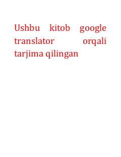

AOKichik odatlar orqali hayotingizni tubdan o'zgartiring.
Ushbu kitob kichik o'zgarishlar va atom odatları orqali hayotni tubdan yaxshilash, yaxshi odatlarni shakllantirish hamda yomon odatlardan xalos bo'lish yo'llarini o'rgatadi. Muallif Jeyms Clear kichik harakatlarning katta natijalarga olib kelishini hayotiy misollar va ilmiy asoslar yordamida tushuntiradi. Kitob o'z ustida ishlashni istagan va tizimli ravishda rivojlanishni xohlovchi barcha kitobxonlar uchun mo'ljallangan.